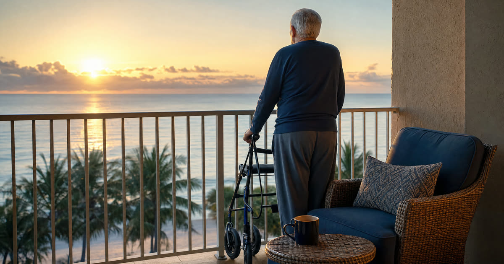

The Baxters' Cabin: One Home Protected, One Home Counted
Let me introduce you to the Baxters, a composite family I use to illustrate a problem I see often in my Ponte Vedra practice. Frank is 84, Evelyn is 81, and they have lived in the same Ponte Vedra home for over thirty years. They also own, free and clear, a small cabin near Highlands, North Carolina, bought decades ago as a summer escape from the Florida heat. They use it about three months a year. Their children have fond memories there and nobody in the family wants to sell it.
When Frank's health began to decline and the family started looking at Florida Medicaid for nursing home care, they assumed the cabin was safe the same way their Ponte Vedra homestead would be. It is not. Florida's homestead exemption, both the constitutional protection and the Medicaid asset exemption that mirrors it, applies to one primary residence only. The Ponte Vedra home, where the Baxters actually live, is exempt from the Medicaid asset count regardless of its value, so long as it remains their principal residence. The Highlands cabin is a second home. For Medicaid purposes, it is treated as a countable asset, full stop, no matter which state it sits in.
Have this exact situation? Talk it through with a Florida attorney — the 20-minute consultation is free.
Book Free Consult or call (888) 388-8445Why a Second Home Counts the Same Whether It's in Georgia, North Carolina, or Florida
A question I hear constantly: does owning property out of state make it harder for the Department of Children and Families to find, or does it somehow fall outside Florida's rules? Neither is true. Florida's Medicaid asset test looks at everything an applicant owns nationwide, not just what sits within Florida's borders. A mountain cabin in North Carolina, a lake house in Georgia, or a condo in Tennessee is evaluated by exactly the same rules as a second home in Orlando would be.
A single Medicaid applicant generally cannot hold more than a very modest amount in countable assets, and a non-exempt second home's equity value is added directly to that total. For a couple like the Baxters, where one spouse needs nursing home care and the other remains in the community, the math becomes a planning exercise in itself, one that a paid-off mountain cabin can complicate considerably if it is not addressed before an application is filed.
Valuing Out-of-State Property for the Medicaid Application
The Department of Children and Families, through its ACCESS system, requires applicants to disclose all real property and its current fair market value, wherever it is located. For an out-of-state parcel, that usually means an appraisal or a comparable market analysis from a real estate professional familiar with that county, not a Florida appraiser's estimate and not simply the tax assessor's figure, which can run well below or above true market value depending on the jurisdiction.
I always tell families to get a credible, dated valuation in writing before the application goes in. CARES, the Department of Elder Affairs unit that conducts the level of care assessment, and DCF's eligibility specialists will want documentation that holds up, and an outdated or unsupported number is one of the more common reasons an application stalls or draws a request for additional information.
The Four Paths: Sell, Transfer, Rent, or Trust
Once a second home is identified as countable, families generally have four options. Each has a different Medicaid effect and a different tax consequence, and the right choice depends heavily on timing.
- Sell it. Selling converts the home into cash, which is still a countable asset, but it is liquid and can be spent down properly on care, exempt purchases, or protected through tools like the Community Spouse Resource Allowance. Selling creates no Medicaid penalty because fair market value was received. It may, however, trigger capital gains tax if the sale price exceeds the owners' basis in the property, an issue the Baxters would need to review with a tax professional familiar with North Carolina's own rules on nonresident sellers.
- Transfer it outright. Gifting the cabin to adult children, or selling it to them for less than fair value, is a transfer for less than value. Because Florida applies a 60 month look-back period, a transfer made within that window creates a penalty period, a span of time Medicaid will not pay for care, calculated using the gifted equity. Done early enough, well outside the look-back window, an outright transfer removes the asset cleanly. Done close to an application, it can backfire badly.
- Rent it. This is often the most useful tool for a family that wants to keep the cabin. Florida policy allows a genuine income-producing rental property to be excluded from the countable asset calculation, even a vacation home used seasonally, as long as the rental is real: a fair market rent, a written lease, and consistent reporting of the rental income. A token arrangement with a family member at a nominal rate will not satisfy this exemption. The rental income itself then becomes part of the applicant's income for Medicaid purposes, which may require a Qualified Income Trust if it pushes monthly income over Florida's income cap.
- Place it in trust. An irrevocable trust, set up well ahead of any anticipated need for care, can remove the cabin from the applicant's countable estate entirely. The five-year look-back clock applies to this move exactly as it does to an outright gift. A properly drafted trust can also simplify what happens at death, since out-of-state real property held individually may require a second, ancillary probate proceeding in the property's home state in addition to the primary Florida probate. A trust avoids that altogether.
Why North Carolina Counsel Matters, and What Happens at Death
Deeding Florida property is one thing. Deeding North Carolina property, or Georgia property, into a trust or to a new owner requires compliance with that state's recording requirements, transfer tax rules, and deed formalities, which do not mirror Florida's. I coordinate with local counsel in the property's state whenever a transfer, trust funding, or sale is on the table, because a deed drafted under Florida conventions can create title problems in another state's recording office.
One more piece families often overlook: if a second home is kept until death, perhaps because the children decide to retain and eventually inherit it, the property generally receives a step-up in basis to its fair market value as of the date of death. That can eliminate most or all capital gains tax for heirs who later sell it, a meaningful advantage that a lifetime sale or gift does not carry. Whether estate recovery can reach that property after a Medicaid recipient's death is a separate and important question, one Truestead has addressed in our estate recovery guide, and it deserves its own careful look alongside any second-home decision.
What the Baxters Decided
In our illustration, the Baxters chose to convert the Highlands cabin into a genuine rental property rather than sell it or gift it outright. The family was not ready to part with it, and an outright transfer so close to needing care would have triggered a penalty period under the look-back rules. By putting the cabin on the market as an actual seasonal rental, with a lease and fair market rent documented in writing, they were able to exclude its value from Frank's countable assets while coordinating the resulting rental income through proper Medicaid income planning. It was not a perfect solution for every family, but for the Baxters it preserved both the cabin and Frank's eligibility.
Frequently Asked Questions
The Truestead Takeaway
The Baxters' situation, like many Florida families with a cabin, lake house, or mountain retreat in another state, is not a reason to panic, but it is a reason to plan early. A second home does not share in Florida's homestead protection, and ignoring it is one of the more common ways an otherwise well-prepared family gets an unwelcome surprise during a Medicaid application. The right path, whether selling, converting to a real rental, transferring, or funding a trust, depends on timing, the family's goals for the property, and coordination with an attorney licensed in the state where the property sits. If your family owns property outside Florida and expects to need long-term care planning in the coming years, review it with a Florida elder law attorney well before a crisis arrives.
Have a child turning 18? Get the free 18 & Protected packet — the legal documents every Florida 18-year-old needs.
Get the Free PacketTalk to a Florida Attorney
Every family’s situation is different. Schedule a consultation with Arthur Simpson, Esq. to review your plan and your options under Florida law.
Schedule a Consultation →This article is for general informational purposes only and does not constitute legal advice, nor does reading it create an attorney-client relationship. Florida estate, elder, probate, and real estate law are fact-specific and change over time. Consult a licensed Florida attorney about your individual circumstances. Arthur Simpson, Esq. is licensed to practice law in the State of Florida. Attorney advertising.
Talk to a Florida Attorney — Free 20-Minute Consultation
Pick a time below. No obligation, no pressure — just answers.